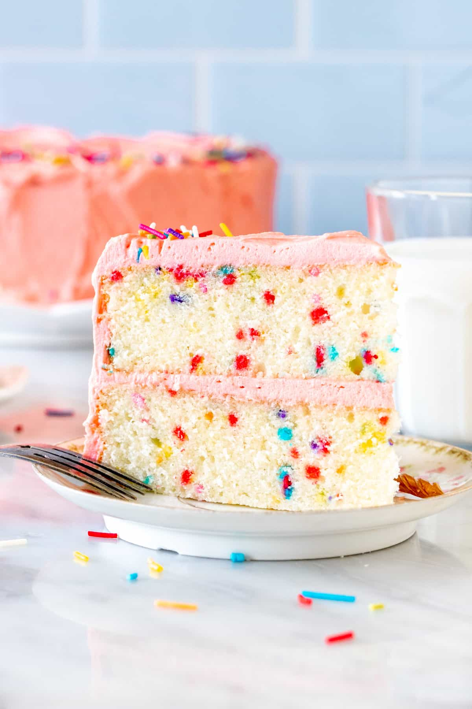

Funfetti cake
A fun cake to make to sprinkle up your boring life

Ingredients
- 3 cups all-purpose flour (375 grams)
- 2 ½ teaspoons baking powder
- ½ teaspoon salt
- 1 cup whole milk (240 ml)
- ¼ cup sour cream (60 ml)
- 1 teaspoon vanilla extract
- ½ teaspoon almond extract
- 1 tablespoon vegetable oil
- 1 cup unsalted butter (226 grams)
- 2 cups granulated sugar (400 grams)
- 6 large egg whites
- ½ - ¾ cup sprinkles
Instruction
- Preheat the oven to 335F (165C) degrees. Line the bottom of two 8-inch round pans* with high sides with parchment paper. Then grease and flour the sides of the pans
- In a medium bowl sift together the flour, baking powder, and salt. Give it a whisk so that everything is evenly mixed
- In a large liquid measuring jug or medium bowl, whisk together the milk, sour cream, vanilla extract, almond extract and oil.
- In a large bowl beat the butter and sugar until fluffy (about 5 minutes).
- Beat in the egg whites about 1-2 egg whites at a time. . Turn off the mixer and scrape down the sides and bottom of the bowl as necessary.
- With the mixer on low speed, beat about ⅓ of the flour mixture into the butter mixture. Then mix in about ½ of the liquid ingredients. Repeat the process, mixing in about another ⅓ of the flour mixture, followed by the rest of the milk. Then mix in the last ⅓ of the flour mixture.
- Stop mixing as soon as everything is combined.
- Using a rubber spatula, gently fold in the sprinkles. Be very gentle, or the color will bleed into the cake batter.
- Divide the batter evenly between the prepared pans and gently spread the top smooth.
- Bake in the preheated oven for about 32-37 minutes, or until an inserted toothpick comes out clean. Cool the cakes in their pans for about 15-20 minutes, then gently invert the cake pans to remove the cakes. Continue cooling on a wire cooling rack. To cool the cakes more quickly, wrap in plastic and place in the freezer. The plastic will keep the moisture in.